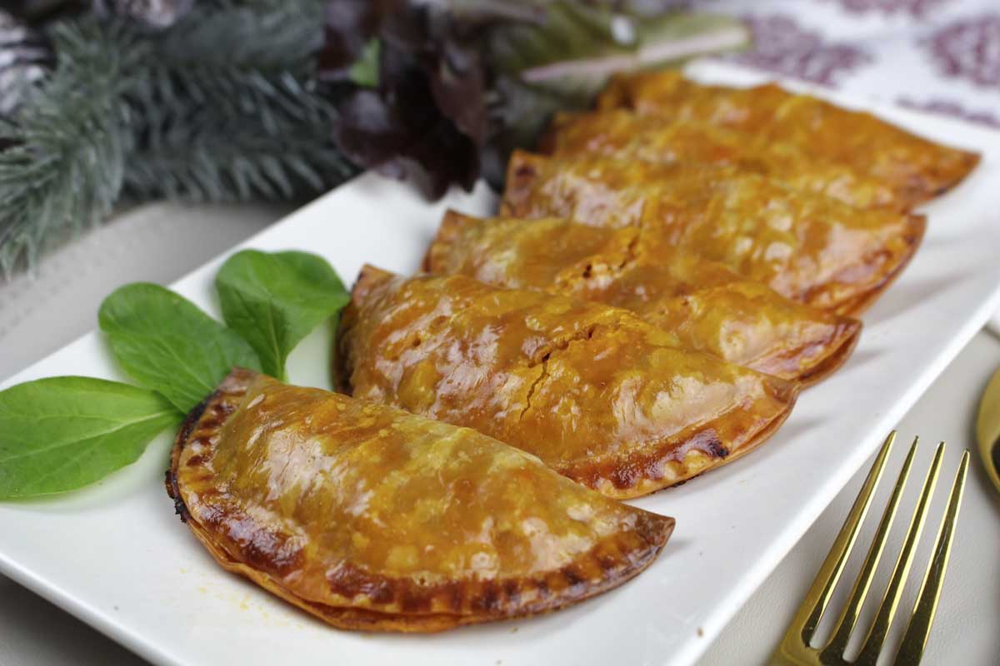

Tostamos la harina para la bechamel: Se pone la sartén en el fuego con el aceite. Cuando esté un poco caliente (bastante antes de echar humo) se aparta la sartén y se va echando con una cuchara de madera la harina a la sartén, moviéndola hasta que se vea que se hace masa. Es importante removerla durante 3 o 4 minutos para que se tueste la harina y las croquetas no sepan a harina cruda.
Hacemos la bechamel: Se pone nuevamente la sartén en el fuego flojo y se añade la leche poco a poco; sin parar de mover la masa hasta que esté cocida y consistente. Entonces se añade la nuez moscada, un poco de sal y el ingrediente elegido picado. Se deja cociendo en la sartén sin parar de moverla hasta que se espese.
Enfriamos la masa de las croquetas: Una vez espesa la bechamel, se vacía en una fuente y se deja enfriar fuera de la nevera durante una hora aproximadamente. Después, se mete en la nevera unas dos horas como mínimo, tapándola con papel film para que no se seque. Esto hasta que la masa se enfríe del todo y quede bien espesa…
Damos forma a las croquetas caseras: Se baten los huevos aparte. Una vez fría la masa, con mucho cuidado y con la ayuda de dos cucharas, una en cada mano, ve formando y moldeando las croquetas del tamaño de la cuchara más o menos. No lo hagas con las manos, es mejor con las cucharas. Ve pasándolas por el huevo y la dejas en el plato del pan rallado. Ahora con las dos manos recoge la croqueta al mismo tiempo que coges un montón de pan rallado con las manos, para que no se te pegue a los dedos. Empana bien la croqueta y dale la forma, que quede bien cubierta y compacta. Y así con todas. Ve dejándolas en un plato grande. Cuando ya estén todas empanadas, mételas en la nevera una hora.
Freímos las croquetas: Se fríen en bastante aceite caliente, que las cubra. Dales la vuelta con cuidado y ten cuidado porque se queman muy rápido. Cuando se ponen doradas se sacan y se ponen a escurrir sobre papel de cocina.
En una cacerola con agua (que cubra de sobra los huevos) y una cucharadita de sal, introduce los huevos. Pon la cacerola en el fuego, que esté fuerte, y a partir del momento en que empiece a hervir, dejar cocer los huevos 10 minutos.
Al cabo de 10 minutos, retirar la cacerola del fuego, escurrir los huevos y dejar que se enfríen.
Mientras, preparamos el resto del relleno. Cortar la cebolla en juliana muy finita y saltear en una sartén a fuego medio con un poquito de aceite y sal, durante 5 minutos, para que esté ligeramente transparente.
Escurrir el atún y añadir a la sartén. Revolver todo durante un par de minutos.
Cortar muy pequeñitas las aceitunas y agregar a la sartén. Añadir también el tomate, rectificar de sal si es necesario y cocinar un par de minutos más.
Pela los huevos duros y córtalos en pequeños trozos, e incorpóralo al relleno que ya estará fuera del fuego.
Precalienta el horno durante 10 minutos a 180ºC mientras rellenas las empanadillas.
Ahora toca rellenar las empanadillas. Sobre la masa coloca una cucharadita de relleno (no demasiado grande para que no se rompa la masa), dobla por la mitad, aplasta ligeramente los bordes un poquito con los dedos y a continuación sella con un tenedor.
Pon las empanadillas sobre papel de horno, y éste sobre una bandeja o rejilla de horno. Bate el huevo y pinta las empanadillas por encima con él (lo ideal es que lo hagas con un pincel de cocina).
Mete la bandeja al horno durante unos 10 minutos, aunque el momento ideal es que cuando veas que la superficie de las empanadillas está doradita, en ese momento sácalas y deja que se enfríen un poco.
